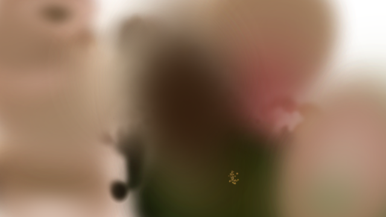
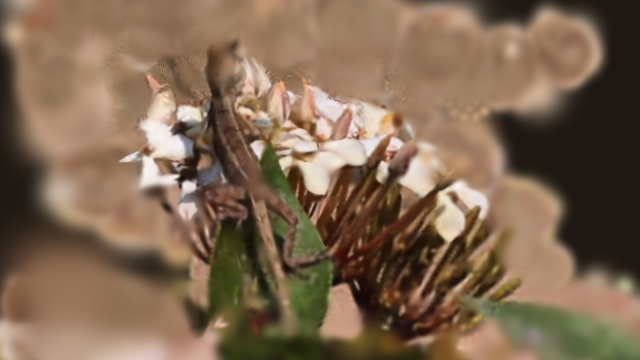
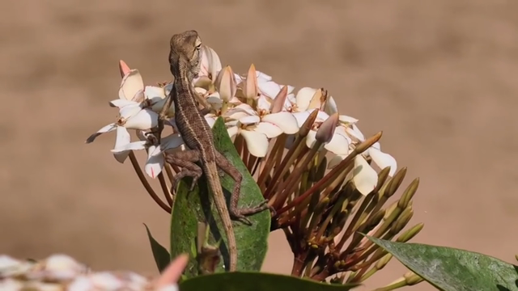

Existing held-out renders at source time 1.416667 seconds, in each reconstruction's own coordinates. Sharpness 14.050×; SSIM -0.033142; first view 122.0% of main's time. This pair misses the combined target. Unranked diagnostic, not a corpus result or a review movie.



Source: Chameleon on ixora flowers, Ventrovert, CC BY4.0. Images are unchanged benchmark artifacts. Method and limitations · Attribution.